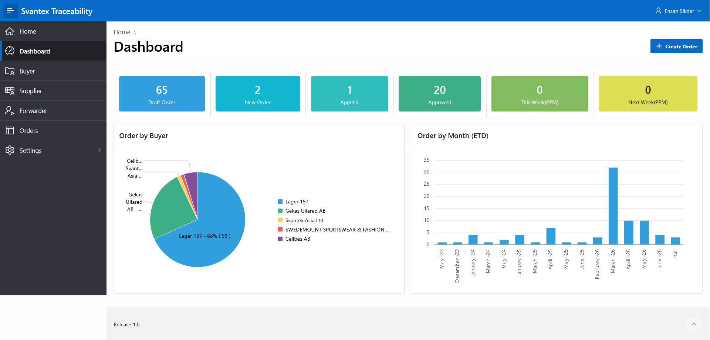
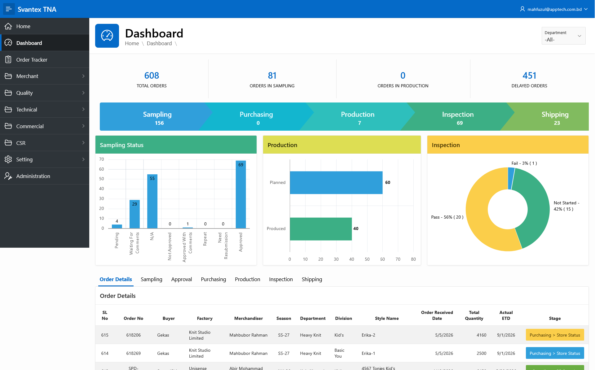
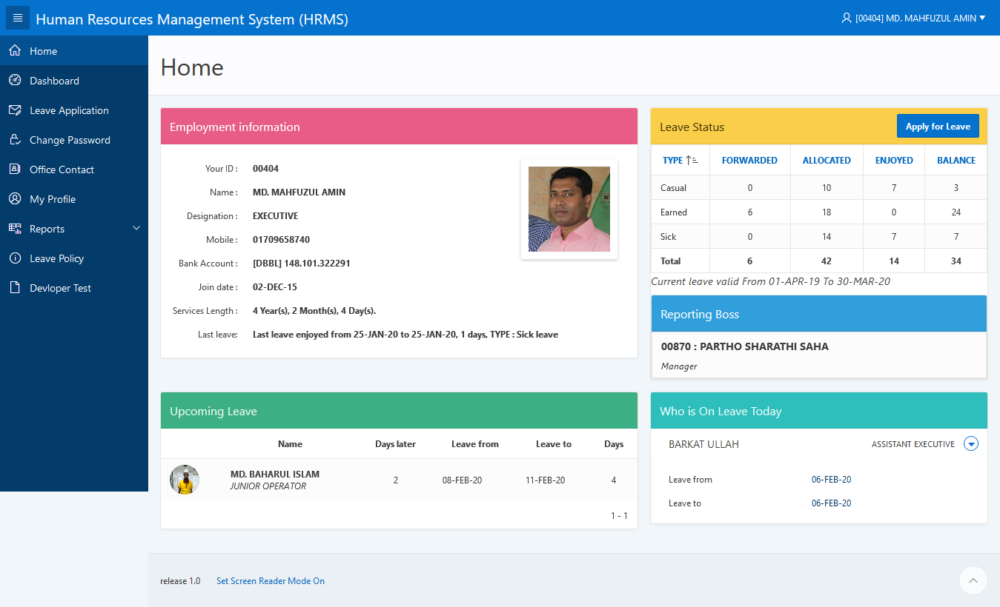
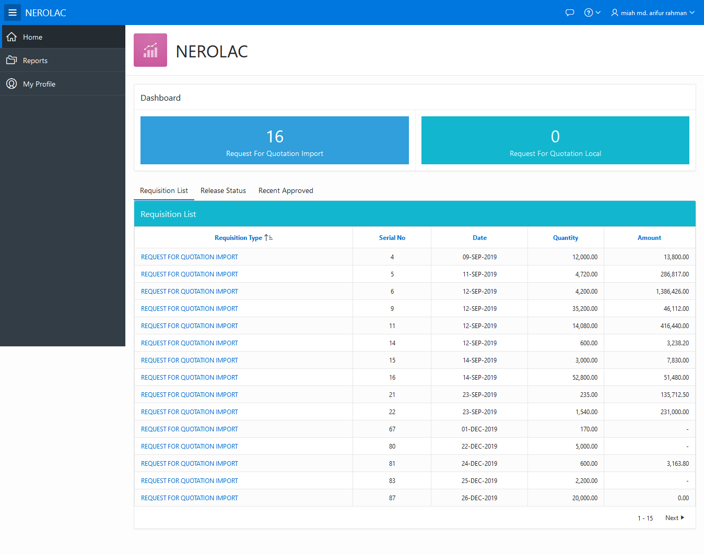
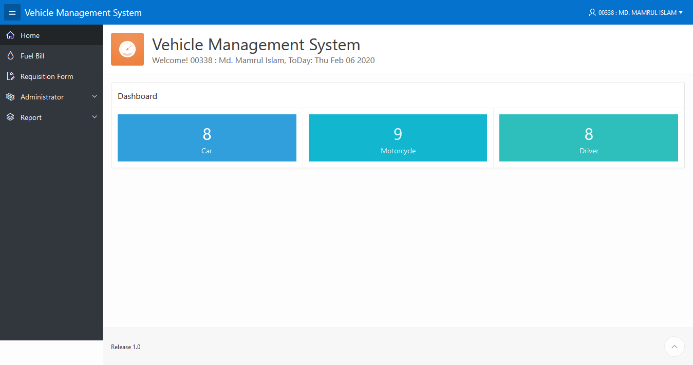

Primary Architecture
Low-code enterprise platforms with native AI integration and procedural SQL pipelines.
- Oracle APEX 26.1 AI
- Oracle DB 26ai
- Oracle APEX 23.2
- Oracle APEX 20.2
- PL/SQL
- SQL
- ORDS 26.2
- ORDS 23.4
A decade-plus engineering leader specializing in Oracle APEX 26.1 (AI Integration) and Oracle Database 26ai, alongside legacy APEX 23.2 / 20.2 platforms. Architecting HRMS, CRM, and supply-chain telemetry with embedded AI workflows, server-grade infrastructure orchestration, and end-to-end relational database migrations for enterprise paint, chemical, and manufacturing operations.
A distilled view of the architecture, infrastructure, and language stack I deploy across enterprise engagements.
Low-code enterprise platforms with native AI integration and procedural SQL pipelines.
Database engine layers and hardened server topology.
Hardware-driven and geospatial telemetry integrations.
Production-grade code across backend, mobile and web.
Two anchor engagements shaping full-scale enterprise APEX deployments.
Owning the complete IT operations footprint — from server uptime and database performance tuning to enterprise HRMS rollout. Spearpeded the design and deployment of a live geolocation personnel tracking infrastructure with biometric hardware integration across factory zones.
Led a multi-engineer team through a custom APEX CRM deployment across departments — from project intake and conveyance tracking to follow-up analytics. Mentored engineering personnel, enforced code review standards, and stabilized cross-database reporting layers.
Tap any module to enter a deep-dive engineering view.

Supply-chain map engine powered by Oracle APEX 23.2 + ORDS 26.2 with an OpenStreetMap canvas for live shipment visualization.

Manufacturing controller mapping every production milestone with stage gates, escalations and bulk follow-up orchestration.

Personnel tracking infrastructure combining leave, attendance, biometric punch data and live field GPS mapping for field teams.

End-to-end procurement workflow with a comparative statement (CS) approval pipeline that routes every requisition to stakeholders via automated email notifications.

Full-spectrum fleet operations covering repair requisitions, fuel billing and maintenance schedules — all stitched into a single APEX dashboard.
Direct regional nodes and verified references for enterprise engagements.